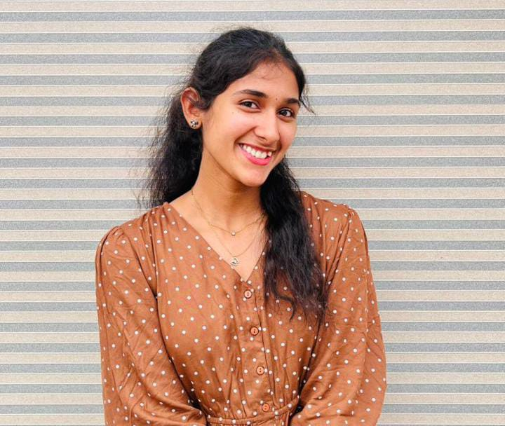
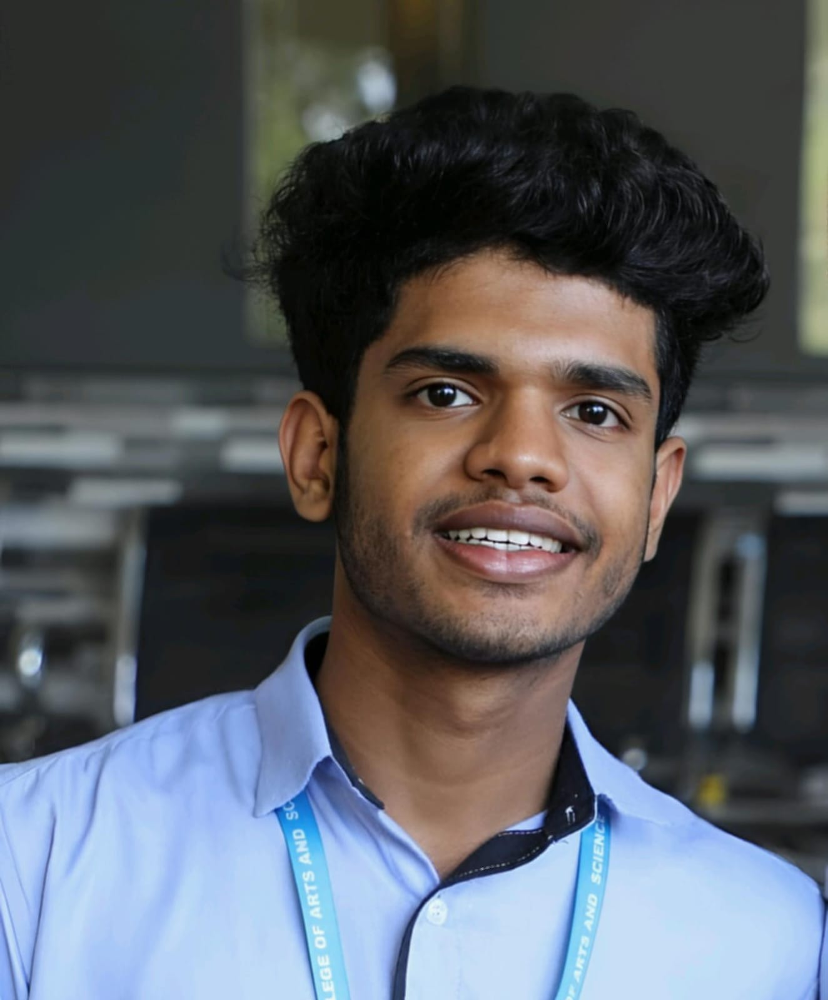
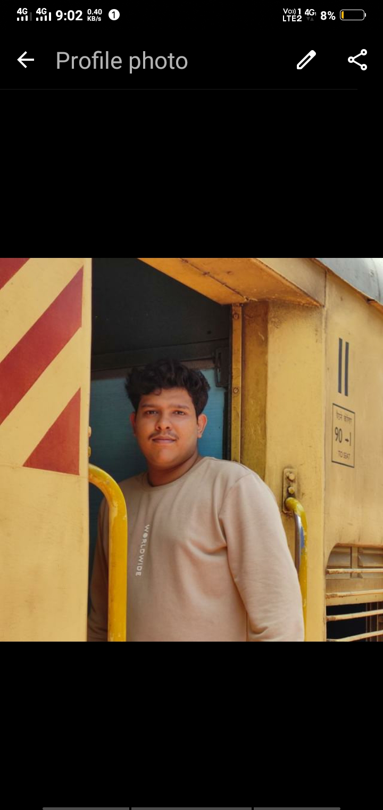

Leave a Message for Us
Dear Bincy Miss, we would love to have a short message from you for our
class memory. Your words will be a cherished memory for us!
Aravind
Dear Bincy miss; Thank you for being an amazing teacher and mentor.
Your belief in me made a huge difference. I'll carry your lessons
with me always. You've inspired me to love learning and see my
potential. Thank you for creating a classroom where I felt seen and
valued. Wishing you all the best!. Your dedication and passion come
alive. Thank you for challenging me and for all the support. You've
had a lasting impact.
2:01pm
Aleena
Misseyyy🥹💗..... Seeing the msg about you were leaving was
completely unexpected and for a moment it felt hard to believe, it
felt like a deep heaviness in my heart🥺❤️🩹.... Thankuuu for your
support, care and guidance - you truly understood us and motivated
us in every way🥹🤍... We will really miss your presence in clg, and
you will always be remembered with love and respect 🫶🏻..... Wishing
you all the success in your new journey missee😇🫂✨....
2:01pm
Christeena
When we saw the message that you are leaving, it was honestly
shocking. No one in this class ever expected this. I was happy
thinking we might get a free period because you weren’t coming but
that feeling didn’t last long.Thank you so much, Miss for supporting
us in everything. We could always come and talk to you freely, and
you cared for us just like your own children. I will miss you so
much, and all the very best for your future🥹❤️. Please remember us
sometimes don’t forget us while taking care of only the new
students.😒
2:01pm

Lena
Misse u was such a cmfrt zone❤️ Trulyy a motherly feel had grown for
uh🥹your guidance, support ,love ,evrythng was really priceless..
Wishing u a great future lyf ahead... Stay happy & healthyy ,luv u
lotzz😇❤️ Will miss youhhh...❤️
2:01pm
RE
Reehan
Miss u my miss
2:01pm

Akash
Dear Bincy Miss, You are much more than a teacher to me, you are
like a true friend, someone with whom I could share everything
openly, just as I do with my friends. Knowing that you will no
longer be in our college truly breaks my heart. It feels as though I
have lost not only a wonderful teacher, but also a dear friend. Your
presence, care, and guidance will always be deeply missed.
2:01pm
Renjana
Miss..Thank you for being more than just a teacher to us..This
college will not feel the same without you🙂...Wishing you success,
happiness, and beautiful new beginnings. With lots of love and
respect🥹💙🫂
2:01pm
LINDA
It’s really hard to accept that you are leaving our college☺️....
Your classes, guidance, and the care you showed us will always be
remembered..We'll miss youu 💗🥰
2:01pm
Neethul
Thanks, Bincy ma’am, for fixing our bugs even before we found them
😄
2:01pm

Adhitya
Misseee, it feels strange knowing you won’t be around anymore. Thank
you for all the care and support you’ve given us.....it means more
than you probably realise...We’re really going to miss you here.
Wishing you the very best ahead. ❤️
2:01pm
Ashina
Dear Bincy miss..... Thank you for being a wonderful class
teacher🥹🤍..You shaped our discipline, values, and attitude towards
learning..You will always remain an important part of our memories
🙂🫂♥️
2:01pm
Aiswarya
Dear miss.. My heart feel heavy knowing you’re leaving..Thank you
for loving us like your own🫂...Our college won’t be the same
without you 🙂.. We’ll miss you always 🥺🫂❤️🩹..Wishing you all the
success and happiness in your new college..🥹🫶🏻
2:01pm
Nervin
Thanks for debugging our programs and our brains!
2:01pm
Justin
Thank you for being more than just a class teacher. You’ve been a
mentor and a guide to all of us. We are going to miss your classes,
but we’re so excited for your next chapter!
2:01pm
Justin
Thank you for being more than just a class teacher. You’ve been a
mentor and a guide to all of us. We are going to miss your classes,
but we’re so excited for your next chapter!
2:01pm

Robin
Best wishes on your new journey, Bincy ma’am—our college will miss
you
2:01pm